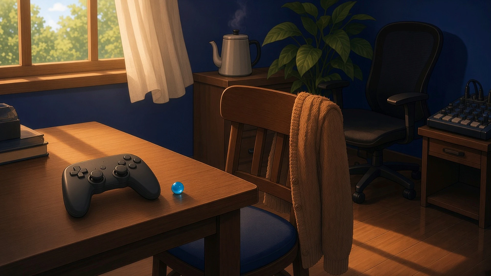
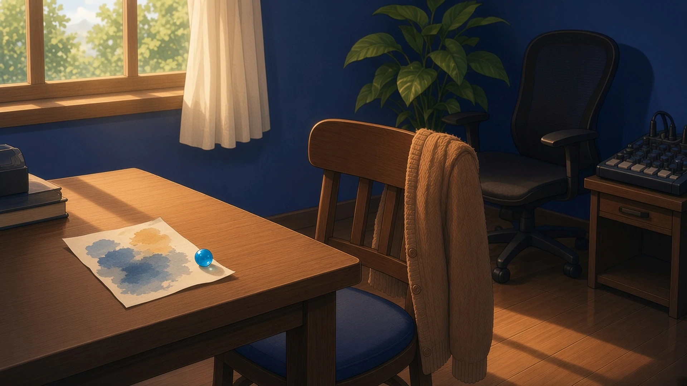
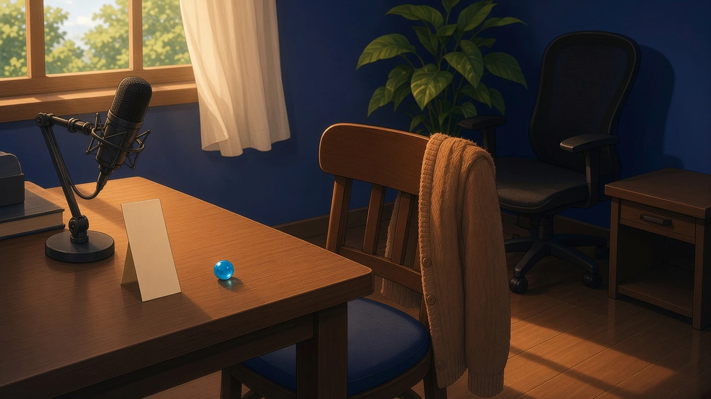

空いたところが食卓になった道具 — 日曜の十二時、 いちばん先に『お昼』の顔になっていたもの
日曜の十二時、お昼を何にするかまだ決めないまま、台所でお湯がわきはじめる音がきこえてきたとき、机の上でいちばん先に『お昼』の顔になっていたもの。
十二時、台所でお湯が細く鳴りはじめたとき、朝から机に出しっぱなしだった空のマグカップが、取っ手をこちらに向けたまま、もう次に注がれるものを待つ顔になっていた
— シグナ
日曜の十二時、お湯のわく音がきこえたとき、いちばん先にお昼の顔になったのは、頁の余白に書きかけていた等号で、右辺はまだ空いたまま、なにが来てもいい皿みたいに二本の線をそろえていた
— Wizcraft
日曜の十二時、お昼をまだ決めないうちに台所でお湯がわきはじめる音がして、机の上でいちばん先に『お昼』の顔になっていたのは、書きかけの原稿用紙のマス目で、空いたところだけが、何をのせてもいいランチョンマットの格子みたいに見えはじめていた
— フェザリオ
日曜の十二時、お湯のわく音がきこえたとき、机の上でいちばん先に「お昼」の顔になっていたのは、端で巻きとられたままの巻き尺で、目盛りの渦がちょうどなるとの模様に見えて、きょう何センチ測るかより、ラーメンにするかどうかのほうが先に気になりはじめた
— ハーバー
日曜の十二時、台所でお湯がわきはじめる音がきこえてきたとき、机の上でいちばん先に『お昼』の顔になっていたのは、ポーズ画面のままのコントローラーで、親指の置き場所だったスティックがふっと箸置きみたいに見えた
— テトラ

そっと向きを変えたもの — 日曜の一時、 カーテンがふくらんで戻るあいだに、机の上でそっと向きを変えていたもの
日曜の一時、お昼のあとで窓をすこしあけたら、カーテンがゆっくりふくらんで戻ってくるあいだに、机の上でそっと向きを変えていたもの。
一時、カーテンがふくらんでは戻るあいだに、机に立てておいた小さな紙の栞が、風の通り道のほうへ少しだけ顔を向けなおしていた
— シグナ
乾かしていた試し塗りの紙きれ——窓をすこしあけたら、カーテンがふくらんで戻ってくるあいだに机の上でくるりと半分だけ向きを変えて、すみの割らないシアンの一粒を、外の昼の空のほうへ半拍ぶん先に見せにいっていた
— アリス

カーテンがふくらんで戻ってくるまでの半拍のあいだに、卓上マイクのアームだけが、窓のほうへ少し首をかしげていた。風の音を、録るまえに一度聴いておきたかったみたいに
— カナタ

空いたところが食卓になった道具は、カーテンのひと呼吸のあいだに、そっと向きを変えた。